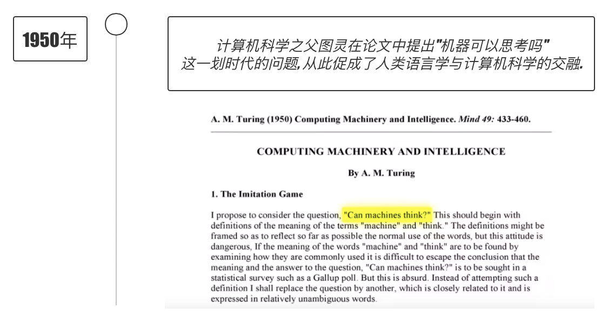
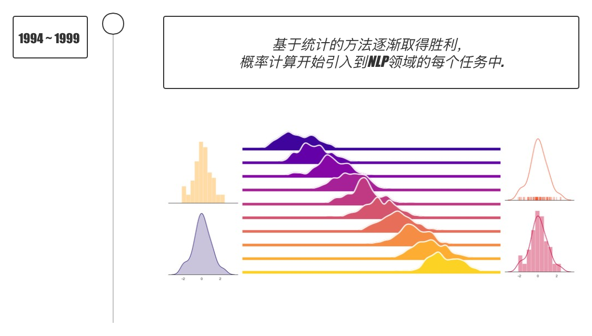
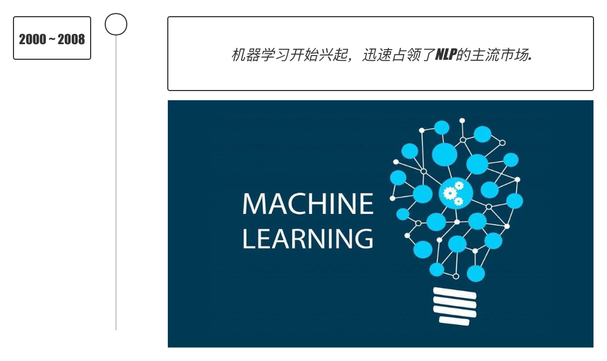
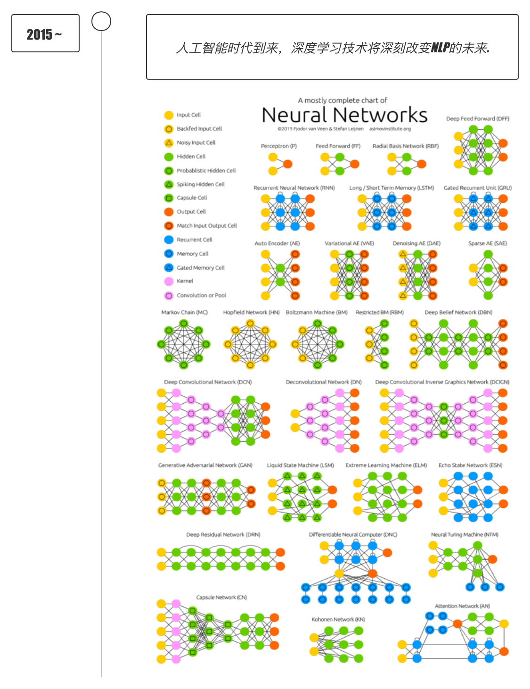
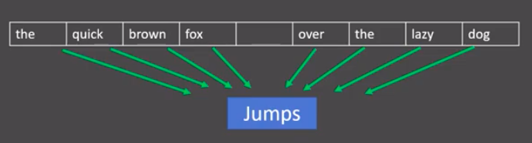
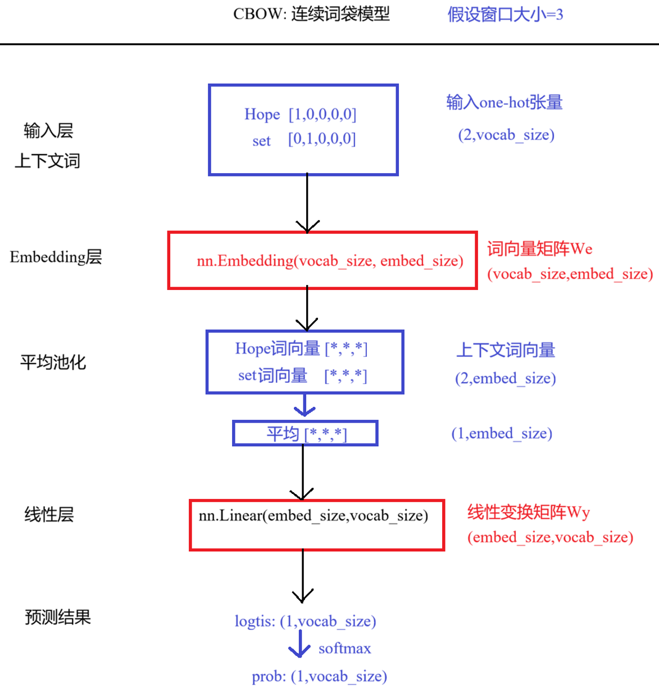
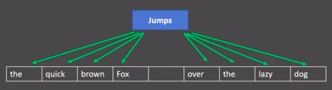
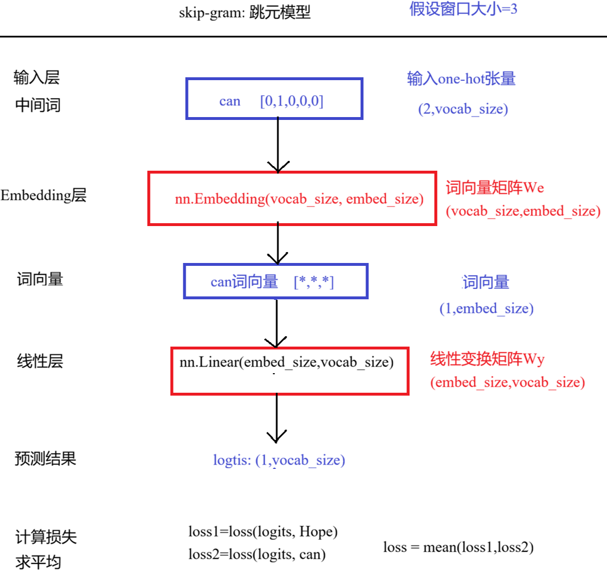
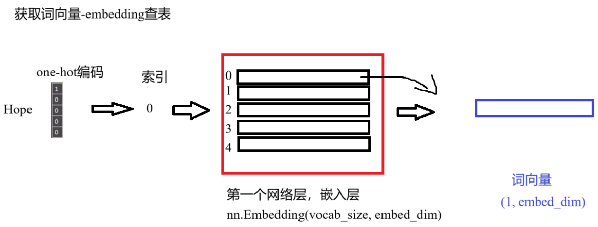
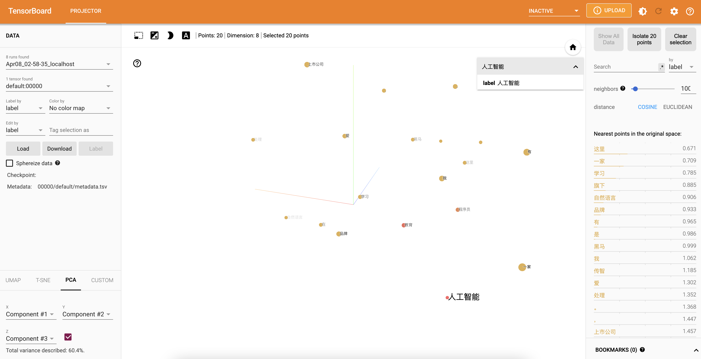

import torch import matplotlib.pyplot as plt # 设置中文字体 plt.rcParams['font.sans-serif'] = ['SimHei'] # 微软雅黑 plt.rcParams['axes.unicode_minus'] = False # 解决负号显示问题 # 设置设备，优先使用顺序：GPU > MPS > CPU DEVICE = torch.device( "cuda" if torch.cuda.is_available() else "mps" if torch.backends.mps.is_available() else "cpu" ) print(f"当前设备：{DEVICE}")
当前设备：cuda
1 自然语言处理入门
学习目标
- 了解什么是自然语言处理.
- 了解自然语言处理的发展简史.
- 了解自然语言处理的应用场景.
- 了解本教程中的自然语言处理.
1.1 什么是自然语言处理
-
自然语言处理（NLP）：让计算机理解、生成并与人类语言交互的技术。
-
什么叫"机器真的理解了语言"？
不是"说得像人"就算理解，而是能在语言变化下，稳定、可泛化、可解释地完成语义任务。
| 维度 | 含义 | 举例 |
|---|---|---|
| 任务能力 | 完成问答、翻译、摘要等任务 | 多类任务上稳定高分 |
| 语境与常识 | 理解隐含信息 | 正确处理指代、否定、歧义 |
| 语义一致性 | 换种说法结论不变 | 改写、反问后答案一致 |
| 组合与泛化 | 应对未见过的表达 | 新组合也能正确理解 |
| 可解释性 | 能给出推理依据 | 指出证据句段或推理路径 |
| 稳健性 | 抗噪声干扰 | 有错别字仍能正确理解 |
| 对话能力 | 多轮上下文跟踪 | 记住历史、能纠错澄清 |
| 事实与校准 | 减少"幻觉" | 不确定时能说"不知道" |
| 跨模态执行 | 语言驱动行动 | 结合图像/环境完成指令 |
1.2 自然语言处理的发展简史




1.3 自然语言处理的应用场景
- 语音助手
- 机器翻译
- 搜索引擎
- 智能问答
- ...
1.4 机器翻译
- CCTV上的机器翻译系统, 让世界聊得来!
资源说明：原讲义演示视频未随资料提供，本页已保留对应流程与知识说明。
2 认识文本预处理
学习目标
- 了解文本预处理相关内容
文本预处理及其作用
- 文本语料在输送给模型前一般需要一系列的预处理工作, 才能符合模型输入的要求, 如: 将文本转化成模型需要的张量, 规范张量的尺寸等
- 合理的文本预处理可以指导模型超参数的选择, 提升模型效果.
文本预处理的主要内容
| 类别 | 包含内容 |
|---|---|
| 文本处理基本方法 | 分词、词性标注POS、命名实体识别NER |
| 文本张量表示 | one-hot编码、Word2vec、Embedding层 |
| 语料数据分析 | 标签分布、句子长度分布、词频统计与词云 |
| 文本特征处理 | n-gram特征、文本长度规范 |
| 数据增强 | 回译数据增强法 |
说明
- 在实际生产应用中, 最常用的两种语言是中文和英文，文本预处理部分的内容都将针对这两种语言.
3 文本处理的基本方法
学习目标
- 了解什么是分词, 词性标注, 命名实体识别及作用.
- 掌握分词, 词性标注, 命名实体识别的流行工具的使用方法.
3.1 分词
什么是分词
-
分词：将连续的字序列按规范切分为词序列的过程。
- 英文：以空格作为天然分界符。
- 中文：字、句、段有分界符，但词没有，分词就是找到词的边界。
-
示例：
启智教育是一家上市公司，旗下有编程学习者品牌。我是在这里学习人工智能 ['启智', '教育', '是', '一家', '上市公司', '，', '旗下', '有', '', '程序员', '品牌', '。', '我', '是', '在', '', '这里', '学习', '人工智能']
-
分词的作用:
-
词作为语言语义理解的最小单元. 分词是NLP领域高阶任务的基础环节, 如自动问答, 机器翻译, 文本生成等.
-
流行中文分词工具jieba:
- 支持多种分词模式- 精确模式/全模式/搜索引擎模式
- 支持中文繁体分词
-
支持用户自定义词典
-
jieba的安装:
pip install jieba
- jieba的使用:
| 分词模式 | 说明 | 适用场景 |
|---|---|---|
| 精确模式 | 将句子最精确地切开 | 文本分析 |
| 全模式 | 扫描所有可成词的词语，速度快，不能消除歧义 | 关键词提取 |
| 搜索引擎模式 | 在精确模式基础上对长词再次切分，提高召回率 | 搜索引擎 |
| 中文繁体分词 | 支持繁体中文文本分词 | 中国香港、台湾地区文本 |
| 自定义词典 | 加载用户词典，提升识别准确率；格式：词语 词频 词性（词频、词性可省略） |
生僻词/专业术语场景 |
3.2 .演示jieba分词
""" 演示 jieba分词 介绍 分词：将连续的字序列按照语法规范切分成连续的词序列的过程 分词之后的最小单元：词/token 常见的分词包： jieba: 最流行的python中文分词库，支持精确模式、全模式、搜索引擎模式、中文繁体分词、自定义词典 IK: 基于JAVA的中文分词工具，ElasticSearch搜索引擎专用 SnowNLP: 基于概率算法的中文自然语言处理工具，支持情感分析、文本分类 pyltp: 哈工大推出的python中文分词工具 THULAC: 清华退出的中文词法分析工具，支持分词和词性标注 jieba分词模式： 1.多种分词模式 **精确模式** 将句子最精确地切开 文本分析 **全模式** 扫描所有可成词的词语，速度快，不能消除歧义 关键词提取 **搜索引擎模式** 在精确模式基础上对长词再次切分，提高召回率 搜索引擎 2.**中文繁体分词** 支持繁体中文文本分词 中国香港、台湾地区文本 3.**自定义词典** 加载用户词典，提升识别准确率；格式：`词语 词频 词性`（词频、词性可省略） 生僻词/专业术语场景 总结： 上述分词模式，其实就是分词粒度不同 涉及到的API: 精确模式: jieba.cut(text, cut_all=False) / jieba.lcut(text, cut_all=False) 全模式: jieba.cut(text, cut_all=True) / jieba.lcut(text, cut_all=True) 搜索引擎模式: jieba.cut_for_search(text) / jieba.lcut_for_search(text) 自定义词典: jieba.load_userdict('...') 注: cut() 返回生成器(generator), lcut() 返回列表(list) 需要掌握： 精确模式，jieba.lcut(text, cut_all=False) """ # 导包 import jieba # 中文分词库 # 1.定义函数，演示 jieba的精确模式分词，适用于 通用文本分析，词性标注，信息提取等 def demo01(): print("演示 jieba的精确模式分词") # 1.初始化输入文本，待分词的文本 text = "启智教育是一家上市公司，旗下有编程学习者品牌。我是在这里学习人工智能" # text = "床前明月光，疑是地上霜，举头望明月，低头思故乡" # 2.使用jieba进行分词 # 参数1：待分词的文本，参数2：是否使用全模式，默认False为精确模式，True为全模式 words = jieba.cut(text, cut_all=False) # 3.打印分词结果 # print(words) # 思路1：list # print(list(words)) # # 思路2：for # for word in words: # print(word) # 思路3: next来获取生成器中的下一个元素 # print(next(words)) # 4.使用jieb.lcut进行分词 words_list = jieba.lcut(text, cut_all=False) print(words_list) # 2.定义函数，演示 jieba的全模式分词，适用于 关键词提取 def demo02(): print("演示 jieba的全模式分词") # 1.初始化输入文本，待分词的文本 text = "启智教育是一家上市公司，旗下有编程学习者品牌。我是在这里学习人工智能" # text = "床前明月光，疑是地上霜，举头望明月，低头思故乡" # 2.使用jieba进行分词 # 参数1：待分词的文本，参数2：是否使用全模式，默认False为精确模式，True为全模式 words = jieba.cut(text, cut_all=True) # 3.打印分词结果 # print(words) # 4.使用jieb.lcut进行分词 words_list = jieba.lcut(text, cut_all=True) print(words_list) # 3.定义函数，演示 jieba 搜索引擎模式分词，适用于：搜索引擎，文本匹配 """ 解释: 搜索引擎模式, 在精确模式分词的基础上, 对长词进行再次切分, 提高召回率. 例如： 场景1: 用户录入 "程序员" 精确模式: 分词结果(程序员)，只能匹配包含完整 "程序员" 的文档. 搜索引擎模式: 分词结果(程序员，程序，员)，不仅能匹配 "程序员" 的文档, 还能匹配 "程序", "员"的文档. 提高召回率. 场景2: 实际应用场景(电商搜索), 商品标题为：小米手机保护壳，用户搜索：小米壳 精确模式： 小米手机保护壳 分词为("小米"，"手机"，"保护壳")，用户搜索切分为(小米，壳),无法匹配 搜索引擎模式: 小米手机保护壳 分词为("小米"，"手机"，"保护"，"壳")，用户搜索切分为(小米，壳)，能匹配 """ def demo03(): print("演示 jieba的搜索引擎模式分词") # 1.初始化输入文本，待分词的文本 text = "启智教育是一家上市公司，旗下有编程学习者品牌。我是在这里学习人工智能" # text = "床前明月光，疑是地上霜，举头望明月，低头思故乡" # 2.使用jieba进行分词 # 参数1：待分词的文本 words = jieba.cut_for_search(text) # 3.打印分词结果 # print(words) # 4.使用jieb.lcut进行分词 words_list = jieba.lcut_for_search(text) print(words_list) # 4.定义函数，演示 jieba的中文繁体分词，适用于 对繁体中文进行分词 def demo04(): print("演示 jieba的中文繁体分词") # 1.初始化输入文本，待分词的文本 text = "煩惱即是菩提，我暫且不提" # text = "床前明月光，疑是地上霜，举头望明月，低头思故乡" # 2.使用jieba进行分词 # 参数1：待分词的文本，参数2：是否使用全模式，默认False为精确模式，True为全模式 words = jieba.cut(text, cut_all=False) # 3.打印分词结果 # print(words) # 思路1：list # print(list(words)) # # 思路2：for # for word in words: # print(word) # 思路3: next来获取生成器中的下一个元素 # print(next(words)) # 4.使用jieb.lcut进行分词 words_list = jieba.lcut(text, cut_all=False) print(words_list) # 5.定义函数，演示 jieba的自定义词典分词，适用于：稍微特殊的词 或 特殊要求的场景 """ 添加自定义词典后，jieba可以准确识别词典中的token，提升整体的识别准确率。分词时只按照词典中token合并，不按照词典中token拆分 词典格式：token 词频(可省略) 词性(可省略) """ def demo05(): print("演示 jieba的自定义词典分词") # 1.定义输入文本 text = "启智教育是一家上市公司，旗下有编程学习者品牌。我是在这里学习人工智能" # 2.加载自定义词典 jieba.load_userdict(r"./data/userdict.txt") # 3.执行分词 words = jieba.lcut(text) print(words) # 测试 if __name__ == '__main__': demo01() demo02() demo03() demo04() demo05()
<本地用户目录>\.conda\envs\nlp_project\lib\site-packages\jieba\_compat.py:18: UserWarning: pkg_resources is deprecated as an API. See https://setuptools.pypa.io/en/latest/pkg_resources.html. The pkg_resources package is slated for removal as early as 2025-11-30. Refrain from using this package or pin to Setuptools<81.
import pkg_resources
Building prefix dict from the default dictionary ...
Loading model from cache <本地用户目录>\AppData\Local\Temp\jieba.cache
演示 jieba的精确模式分词
Loading model cost 0.386 seconds.
Prefix dict has been built successfully.
['启智', '教育', '是', '一家', '上市公司', '，', '旗下', '有', '', '程序员', '品牌', '。', '我', '是', '在', '', '这里', '学习', '人工智能']
演示 jieba的全模式分词
['传', '智', '教育', '是', '一家', '上市', '上市公司', '公司', '，', '旗下', '下有', '', '程序', '程序员', '品牌', '。', '我', '是', '在', '', '这里', '学习', '人工', '人工智能', '智能']
演示 jieba的搜索引擎模式分词
['启智', '教育', '是', '一家', '上市', '公司', '上市公司', '，', '旗下', '有', '', '程序', '程序员', '品牌', '。', '我', '是', '在', '', '这里', '学习', '人工', '智能', '人工智能']
演示 jieba的中文繁体分词
['煩惱', '即', '是', '菩提', '，', '我', '暫且', '不', '提']
演示 jieba的自定义词典分词
['启智教育', '是', '一家', '上市公司', '，', '旗下', '有', '编程学习者', '品牌', '。', '我', '是', '在', '', '这里', '学习', '人工智能']
3.3 词性标注
- 词性标注(Part-Of-Speech tagging, 简称POS)就是标注出一段文本中每个词/token的词性.
- 词性: 语言中对词的一种分类方法，以语法特征为主要依据, 常见的词性有14种, 如: 名词, 动词, 形容词等.
- 举个例子:
我爱自然语言处理 ==> 我/rr, 爱/v, 自然语言/n, 处理/vn rr: 人称代词 v: 动词 n: 名词 vn: 动名词
-
作用:
- 词性标注以分词为基础, 提供句子的语法结构, 是句法分析、语义理解等NLP领域高阶任务的重要基础步骤.
3.4 命名实体识别
- 命名实体识别(Named Entity Recognition，简称NER)就是识别出一段文本中的命名实体.
- 命名实体: 通常我们将人名, 地名, 机构名等专有名词统称命名实体. 如: 周杰伦, 长城, 孔子学院, 24辊方钢矫直机.
- 举个例子:
鲁迅, 浙江绍兴人, 五四新文化运动的重要参与者, 代表作朝花夕拾. ==> 鲁迅(人名) / 浙江绍兴(地名)人 / 五四新文化运动(专有名词) / 重要参与者 / 代表作 / 朝花夕拾(专有名词)
-
作用:
- 从文本中提取关键语义信息，直接支撑信息检索、智能问答等实际应用。
-
举个栗子：从文本中提取关键信息
| 场景 | 输入文本 | NER提取结果 | 应用价值 |
|---|---|---|---|
| 新闻人物与地点 | “马斯克表示，特斯拉在上海的工厂进展顺利。” | 马斯克(人物) 特斯拉(组织) 上海(地点) |
快速生成新闻摘要、知识图谱。 |
| 医疗记录 | “患者头痛，服用布洛芬后缓解。” | 头痛(症状) 布洛芬(药物) |
结构化病历，辅助诊断与用药分析。 |
| 电商评论 | “这款手机的电池续航太短，但摄像头很棒。” | 手机(产品) 电池(部件) 摄像头(部件) |
精准定位产品优缺点，指导改进。 |
| 金融监控 | “报道称腾讯股价因新政策下跌。” | 腾讯(组织) |
自动关联风险名单，触发舆情监控警报。 |
3.5 .NER和POS讲解
""" 演示 POS词性标注 和 NER命名实体识别 解释： POS(词性标注 Part Of Speech Tagging), 标注文本中每个 词/token 的词性. 词性：以 语法 为主要依据，把词划分为不同的类别，比如：动词v，名称n，形容词a NER(命名实体识别, Named Entity Recognition), 就是识别出一段文本中 的 命名实体/专有名词. 命名实体: 人名, 地名, 机构名等专有名词 作用： 提取关键语义信息。(了解概念即可) 需要掌握的： jieba.posseg.lcut进行POS词性标注 """ # 导包 import jieba.posseg as pseg # 演示POS # 1.定义输入文本 text = "我爱深圳创维创新谷5层506教师的可爱的小伙伴,尤其是欢快的‘胡欢’同学" # 2.使用pseg.lcut进行分词 和 词性标注 result1 = pseg.lcut(text) # print(result1) # 3.打印词性标注结果，token-flag for token, flag in result1: print(f"{token}:{flag}") # 4.进行NER命名实体识别 def extract_entities(text): """ 思路：根据jieba.posseg的词性标注结果来提取专有名称，得到命名实体 注意，这是一个简化的NER思路 """ # 1.使用pseg.lcut进行分词 和 词性标注 result = pseg.lcut(text) # 2.定义命名实体的词性-实体类型的字典 flag_to_entity = { "nr": "PERSON", # 人名 "ns": "LOCATION", # 地名 "nt": "ORGANIZATION", # 机构团体名 "nz": "OTHER", # 其他专名 "t": "TIME", # 时间 "m": "NUMBER", # 数字 } # 3.判断分词结果中有哪些命名实体 result_entity = [] for token, flag in result: # 1.获取字典中flag对应的实体类型 entity = flag_to_entity.get(flag, None) if entity is not None: result_entity.append((token, entity)) return result_entity # 进行NER命名实体识别 print(extract_entities(text))
我:r
爱:v
深圳:ns
创维:n
创新:v
谷:nr
5:m
层:q
506:m
教师:n
的:uj
可爱:v
的:uj
小伙伴:n
,:x
尤其:d
是:v
欢快:a
的:uj
‘:x
胡欢:nr
’:x
同学:n
[('深圳', 'LOCATION'), ('谷', 'PERSON'), ('5', 'NUMBER'), ('506', 'NUMBER'), ('胡欢', 'PERSON')]
3.6 小结
-
分词 - 是什么: 将连续的字序列按规范切分为词序列的过程。
- 英文：以空格作为天然分界符。
- 中文：字、句、段有分界符，但词没有，分词就是找到词的边界。。
- 作用:词作为语言语义理解的最小单元. 分词是NLP领域高阶任务的基础。
-
jieba分词工具 - 支持多种分词模式: 精确模式, 全模式, 搜索引擎模式 - 支持中文繁体分词，用户自定义词典 - jieba工具的安装和使用.
-
命名实体识别NER - 是什么：识别文本中存在的各类命名实体。 命名实体：特指人名、地名、机构名等专有名词（如：周杰伦、黑山县、孔子学院）。 - 作用：从文本中提取关键语义信息，直接支撑信息检索、智能问答等实际应用。
-
词性标注POS
- 是什么：标注文本中每个词的词性
- 词性：按语法特征+词意义对词的分类，有名词、动词、形容词等
- 作用：以分词为基础，从语法角度理解文本，是高阶NLP任务的基础。
- 实操：掌握使用jieba进行词性标注的方法。
4 文本张量表示方法
学习目标
- 了解什么是文本张量表示及其作用.
- 掌握文本张量表示的几种方法及其实现.
4.1 文本张量表示
- 将一段文本表示为张量，一般将词表示成向量，称作词向量，再由各个词向量按顺序组成矩阵形成文本张量表示.
- 举个例子:
["人生", "该", "如何", "起头"] ==> # 5 每个词对应矩阵中的一个向量 [[1.32, 4,32, 0,32, 5.2], [3.1, 5.43, 0.34, 3.2], [3.21, 5.32, 2, 4.32], [2.54, 7.32, 5.12, 9.54]]
-
文本张量表示的作用:
-
将文本表示成张量（矩阵）形式，使语言文本可以作为计算机处理程序的输入，进行接下来一系列的解析工作。
- 文本张量表示的方法:
- one-hot编码
- Word2vec
- Embedding层
4.2 one-hot词向量表示
- 又称独热编码，将每个词表示成具有n个元素的向量，只有一个元素是1，其他元素都是0，不同词元素为1的位置不同，其中n的大小是整个语料中不同词的总数.
- 举个例子:
["改变", "要", "如何", "起手"]` ==> [[1, 0, 0, 0], [0, 1, 0, 0], [0, 0, 1, 0], [0, 0, 0, 1]]
4.3 演示one-hot编码
""" 演示 one-hot编码，创建one-hot编码，使用one-hot编码 文本张量介绍： 对文本进行分词, 把每个 词/token 转成对应的向量表示, 即: 用数值向量的形式来描述文本 -> 文本张量. 作用： 神经网络无法直接处理 文本，所以需要把文本转为 文本张量/数值向量，输入到神经网络中进行处理 实现方式： one-hot编码: 独热编码，01编码，当前词/token对应的词表索引位置设为1，其他位置都是0，非常稀疏，列表长度=词表大小=文本分词去重后的token总数 word2vec: CBOW 连续词袋模式 skipgram 跳字模式 word embedding: 动态词向量,nn.Embedding词嵌入层 one-hot编码的优缺点： 优点：操作简单，容易理解 缺点：稀疏向量，向量长度很大/维度很高，大语料库时，会占用巨大内存空间；无法表示语义信息 解决方法：使用稠密词向量方法，word2vec静态词向量，word embedding动态词向量 """ # 导包 import torch import os import json # 1.定义函数，创建one-hot编码 def create_one_hot(): print("创建 one-hot 编码") # 1.准备 文本数据集 text = {"周杰伦", "陈奕迅", "王力宏", "李宗盛", "张信哲", "鹿晗", "胡欢"} # 2.构建词表 vocab = {word: i for i, word in enumerate(text)} print(vocab) # 3.对每个词进行one-hot编码 for word in text: # 1.初始化全0张量，长度为词表大小 one_hot = torch.zeros(len(vocab), dtype=torch.float32) # 2.把word对应的词表vocab中的索引位置设置为1 one_hot[vocab[word]] = 1.0 print(f"{word}:{one_hot}") # 4.保存词表 # 保存词表 os.makedirs(r"./model",exist_ok=True) with open(r"./model/vocab.json", "w", encoding="utf-8") as f: json.dump(vocab, f) print("保存词表成功") # 2.定义函数，使用 one-hot编码 def use_one_hot(): print("使用 one-hot 编码") # 1.加载词表，使用json.load with open(r"./model/vocab.json", "r", encoding="utf-8") as f: vocab = json.load(f) print("加载词表成功") # 2.指定输入token token = "张信哲" # 3.查询one-hot编码 one_hot = torch.zeros(len(vocab), dtype=torch.float32) one_hot[vocab[token]] = 1.0 print(f"{token}的one-hot编码:{one_hot}") # 测试 if __name__ == '__main__': create_one_hot() use_one_hot()
创建 one-hot 编码
{'张信哲': 0, '周杰伦': 1, '胡欢': 2, '王力宏': 3, '鹿晗': 4, '李宗盛': 5, '陈奕迅': 6}
张信哲:tensor([1., 0., 0., 0., 0., 0., 0.])
周杰伦:tensor([0., 1., 0., 0., 0., 0., 0.])
胡欢:tensor([0., 0., 1., 0., 0., 0., 0.])
王力宏:tensor([0., 0., 0., 1., 0., 0., 0.])
鹿晗:tensor([0., 0., 0., 0., 1., 0., 0.])
李宗盛:tensor([0., 0., 0., 0., 0., 1., 0.])
陈奕迅:tensor([0., 0., 0., 0., 0., 0., 1.])
保存词表成功
使用 one-hot 编码
加载词表成功
张信哲的one-hot编码:tensor([1., 0., 0., 0., 0., 0., 0.])
5 文本张量表示方法
在NLP中，将离散的词（token）映射为数值向量，统称为 Word Embedding（词向量表示）。主要有两种方法：
- word2vec: 静态训练词向量
- Embedding层：动态训练词向量
学习目标
- 了解文本张量表示是什么
- 掌握文本张量表示的几种方法
5.1 word2vec模型-静态预训练词向量
- 核心思想：先在大规模无标注语料上预训练词向量，再将其作为固定特征输入到下游任务模型中。
- 训练方法：无监督训练方法, 通过构建浅层神经网络学习词的向量表示, 其嵌入层参数矩阵E(vocab_size, embedding_size)即为词向量矩阵。
- 训练模式：CBOW(上下文预测中间词)，Skip-gram(中间词预测上下文)。
CBOW vs Skip-gram
| 对比维度 | CBOW | Skip-gram |
|---|---|---|
| 训练目标 | 上下文 → 中心词 | 中心词 → 上下文 |
| 输入形式 | 多个上下文词向量聚合（常用均值） | 单个中心词向量 |
| 损失形式 | 单目标损失（中心词） | 多目标损失（多个上下文词） |
| 训练速度 | 更快，计算开销小 | 更慢，计算开销大 |
| 低频词效果 | 较弱 | 较好（对稀有词更友好） |
| 高频词效果 | 较好 | 稳定 |
| 数据规模适配 | 小中等语料更易收敛 | 大语料下优势更明显 |
如何选择-优先skip-gram
| 场景 | 推荐 |
|---|---|
| 训练资源有限、希望快速得到可用词向量 | CBOW |
| 关注低频词/长尾词表示质量 | Skip-gram |
| 大规模语料、追求词向量质量上限 | 优先 Skip-gram（可配负采样） |
CBOW(Continuous bag of words)连续词袋模型
- 上下文词预测中间词：针对一段文本语料, 选定窗口大小, 使用上下文词预测中间词.

-
图中窗口大小为9, 使用前后4个词预测中间词.
-
假设训练语料为: Hope can set you free，窗口大小为3，第一个样本为 Hope can set，输入为 Hope 和 set，输出为 can，在模型训练时，Hope，can，set等词都使用one-hot编码.

-
前向传播过程如图所示:
- 上下文的每个token的one-hot编码进行embedding查表之后得到词向量(2,embed_size)，再求均值得到上下文表示(1,embed_size).
- 将上下文表示(1,embed_size)输入线性层nn.Linear(embed_size,vocab_size), 得到的预测值(1,vocab_size).
- 预测值与真实值(can的one-hot编码)比较，得到损失。然后反向传播，来训练模型.
- 最后窗口按序向后移动，继续训练，直到遍历完所有语料，得到最终的embedding词向量矩阵(vocab_size,embed_size)。
- 每个词输入embedding层，进行embedding查表，得到的矩阵(1,embed_size)就是该token的word2vec张量表示，也就是词向量。
skip-gram跳词模型
- 中间词预测上下文：针对一段文本语料, 选定窗口大小, 使用中间词预测上下文词.

-
图中窗口大小为9, 使用中间词预测前后四个词.
-
假设给定的训练语料为: Hope can set you free，窗口大小为3，第一个样本为Hope can set，输入为can，输出为 Hope 和 set，在模型训练时，Hope，can，set等词都使用one-hot编码.

-
前向传播过程如图所示:
- 中间token的one-hot编码进行embedding查表之后得到词向量(1,embed_size).
- 将中间词向量(1,embed_size)输入线性层nn.Linear(embed_size,vocab_size), 得到预测值(1,vocab_size)。
- 预测值与上下文多个真实值(Hope 和 set 的one-hot编码)比较，得到多个损失，求平均损失，然后反向传播，来训练模型.
- 最后窗口按序向后移动，继续训练，直到遍历完所有语料，得到最终的embedding词向量矩阵(vocab_size,embed_size)。
- 每个词输入embedding层，进行embedding查表，得到的矩阵(1,embed_size)就是该token的word2vec张量表示，也就是词向量。
-
词向量的检索获取-embedding查表
-
神经网络训练完后，神经网络的词嵌入层的参数w 就是词向量矩阵。如何检索某个token的词向量呢？
- 以CBOW方式举例。如下图所示：Hope的onehot编码[10000]，对应索引0，执行embedding查表获取词向量矩阵的对应行w[0]，就是Hope的词向量。

word2vec的训练和使用
- 1.获取训练数据
- 2.训练词向量
- 3.模型超参数设定
- 4.模型效果检验
- 5.模型的保存与加载
获取训练数据
数据来源：http://mattmahoney.net/dc/enwik9.zip
这是英语维基百科的部分网页信息, 大小300M左右。可以通过Matt Mahoney的网站下载。
注意：原始数据集已经放在/root/data/enwik9.zip，解压后数据为/root/data/enwik9，预处理后的数据为/root/data/fil9
- 查看原始数据:
$ head -10 data/enwik9
# 7 原始数据将输出很多包含XML/HTML格式的内容, 这些内容并不是我们需要的
<mediawiki xmlns="http://www.mediawiki.org/xml/export-0.3/" xmlns:xsi="http://www.w3.org/2001/XMLSchema-instance" xsi:schemaLocation="http://www.mediawiki.org/xml/export-0.3/ http://www.mediawiki.org/xml/export-0.3.xsd" version="0.3" xml:lang="en">
<siteinfo>
<sitename>Wikipedia</sitename>
<base>http://en.wikipedia.org/wiki/Main_Page</base>
<generator>MediaWiki 1.6alpha</generator>
<case>first-letter</case>
<namespaces>
<namespace key="-2">Media</namespace>
<namespace key="-1">Special</namespace>
<namespace key="0" />
- 原始数据处理:
# 8 使用wikifil.pl文件处理脚本来清除XML/HTML格式的内容 # 9 perl wikifil.pl data/enwik9 > data/fil9 #该命令已经执行
- 查看预处理后的数据:
# 10 查看前80个字符 head -c 80 data/fil9 # 11 输出结果为由空格分割的单词 anarchism originated as a term of abuse first used against early working class
词向量的训练和保存
查看单词对应的词向量
模型效果检验
模型超参数设定
""" 演示 word2vec静态词向量方法，主要是 CBOW 和 skip-gram word2vec: 属于文本张量表示方法之一，是静态词向量方法，也就是先在大语料库上使用无监督学习方法训练好词向量，再拿训练好的词向量去下游任务上训练 CBOW: 连续词袋模型，由两边预测中间 skip-gram: 跳元模型，由中间预测两边 注意： 这里使用fasttext工具来实现静态词向量训练，包括 CBOW 和 skip-gram fasttext工具训练快速，只支持CPU训练，不支持GPU加速 facebook开发的 fasttext包 就是一个开源的 词向量和文本分类工具 """ import os # 导包 import torch import fasttext # 需要安装：pip install fasttext, 如果不行，尝试: pip install fasttext-wheel import time # 1.定义函数，演示使用fasttext训练静态词向量,并保存模型 def demo01(): # 1.采用无监督模式训练 model = fasttext.train_unsupervised(input=r"./data/sz04aa") # 2.保存训练好的模型 os.makedirs(r"./model",exist_ok=True) # 保存为二进制文件 model.save_model(r"./model/sz04aa.bin") # 2.定义函数，演示使用fasttext加载模型，并使用模型查看词向量 def demo02(): # 1.加载模型 model = fasttext.load_model(r"./model/sz04aa.bin") # 2.获取token对应的词向量 word = "下雨" word_vec = model.get_word_vector(word) print(f"{word}:{word_vec}") print(f"shape:{word_vec.shape}") # 3.查看语义相近的词 words_near = model.get_nearest_neighbors(word) print(words_near) # 3.定义函数，演示 手动设定无监督学习来训练词向量的超参数 def demo03(): start_time = time.time() # 1.采用无监督模式训练 # 参数1：训练数据，参数2：训练模式，默认skip-gram, 也可以选cbow，参数3：词向量维度,参数4:训练轮数 model = fasttext.train_unsupervised( input=r"./data/sz04aa", model="cbow", dim=100, epoch=10, lr=0.02, ) # 2.保存训练好的模型 os.makedirs(r"./model", exist_ok=True) # 保存为二进制文件 model.save_model(r"./model/sz04aa02.bin") end_time = time.time() print(f"cbow训练时间：{end_time - start_time}s") def demo04(): start_time = time.time() # 1.采用无监督模式训练 # 参数1：训练数据，参数2：训练模式，默认skip-gram, 也可以选cbow，参数3：词向量维度,参数4:训练轮数 model = fasttext.train_unsupervised( input=r"./data/sz04aa", model="skipgram", dim=100, epoch=10, lr=0.02, ) # 2.保存训练好的模型 os.makedirs(r"./model", exist_ok=True) # 保存为二进制文件 model.save_model(r"./model/sz04aa03.bin") end_time = time.time() print(f"skipgram训练时间：{end_time - start_time}s") # 测试 if __name__ == '__main__': demo01() demo02() demo03() demo04()
下雨:[-8.6330771e-03 7.8582680e-03 1.1534821e-03 -1.4386143e-03
-1.1835585e-03 -1.5074518e-03 -3.2238211e-03 -1.4618828e-03
-1.9891455e-03 6.7324378e-05 6.4990734e-04 1.9653316e-03
-6.4782137e-03 -4.6458091e-03 -1.1440935e-03 -1.4657070e-03
-1.4534888e-03 6.1365194e-03 6.9523146e-03 -3.1668023e-05
-4.0032174e-03 2.8253905e-03 -6.2919699e-04 2.5819673e-03
1.4065335e-03 -3.3312076e-04 -1.4300118e-03 5.0860476e-03
2.7750880e-03 1.5667690e-03 7.2939312e-03 -2.1207999e-03
-7.4791955e-04 -2.7470040e-04 -8.7642157e-04 -3.4497152e-03
3.7236228e-03 5.0653787e-03 -4.0216995e-03 -4.1744085e-03
-1.2833186e-03 1.4074035e-03 -2.5988675e-03 4.1249222e-03
-1.8709166e-03 -1.4041355e-03 3.9769472e-03 -5.1552858e-03
2.0636758e-03 1.9167362e-03 1.4109439e-03 2.6723638e-03
-1.0469876e-03 -5.4241082e-04 -5.7703943e-04 -1.2664832e-03
-2.2056929e-03 8.1207743e-04 1.9088450e-04 -3.1543765e-03
1.9868899e-03 1.0252097e-03 2.5299145e-03 3.0889418e-03
3.9282972e-03 1.7609205e-03 3.3790478e-03 -1.9297265e-03
2.6169724e-03 2.8715818e-03 -2.1885815e-03 1.4644893e-03
-3.6157318e-03 -4.8985024e-04 1.6349962e-03 -5.6672432e-03
1.8834904e-03 3.4686318e-03 3.4940790e-03 -2.8837714e-03
1.3957102e-03 8.8448171e-05 5.3728716e-03 5.5099779e-04
-1.0839207e-03 -7.4604806e-04 1.0342970e-03 -8.0912840e-03
-4.2841169e-03 -4.3119835e-03 7.6316460e-04 -1.2158591e-03
1.6598734e-03 -1.7397437e-05 6.8280427e-03 6.0315020e-03
1.7678262e-03 -2.7016685e-03 -1.6325591e-03 6.4142994e-03]
shape:(100,)
[(0.3269275724887848, 'bimonthly'), (0.32038062810897827, 'monthly'), (0.3163082003593445, 'degrees'), (0.3133413791656494, 'mathematics'), (0.308165043592453, 'notation'), (0.30779385566711426, 'cgs'), (0.3073922097682953, 'axis'), (0.3068580627441406, 'scaleminor'), (0.3046092092990875, 'notations'), (0.30449169874191284, 'tabula')]
cbow训练时间：113.23065376281738s
skipgram训练时间：184.02844405174255s
5.2 Embedding层-一起训练的动态词向量
- 核心思想：不提前训练词向量，而是在具体下游任务训练过程中，与整个神经网络一起端到端学习词向量。
-
实现方式：nn.Embedding(vocab_size, embedding_size)，训练得到的Embedding层参数就是词向量矩阵
-
词向量的可视化分析:
-
通过tensorboard可视化嵌入的词向量.
-
浏览器展示并可以使用右侧近邻词功能检验效果:
-

""" 演示 文本张量(文本的 词向量表示形式)实现方式之 word embedding动态词向量. word2vec 和 word embedding的区别: word2vec: 先独立训练 词向量，然后输入到模型中做下游任务 word embedding： 不独立训练词向量，而是在具体任务中同时训练 词嵌入层nn.Embedding 和 神经网络， 也就是在训练整个神经网络的过程中，同时训练词嵌入层的参数 / 词向量矩阵 扩展-可视化部分： 1.先安装pip install tensorboard 2.运行代码生成log_dir配置文件后，在终端进入虚拟环境nlp_project 3.进入当前代码路径，比如 <本地路径>, 注意windows中切换路径命令：D: -> cd nlp_project\05-备课代码\ 4.执行命令：tensorboard --logdir=runs --host 127.0.0.1 --port 6006 """ # 导包 import torch import jieba import torch.nn as nn from torch.utils.tensorboard import SummaryWriter # 先安装 pip install tensorboard from collections import Counter # 统计词频 # 1.定义函数，演示 nn.Embedding词嵌入层 实现 word embedding动态词向量,将 token 转为 词向量，并可视化 def demo01(): # 1.定义文本，两个句子 sentence1 = "从前有一段真挚的爱情放在我的面前，可惜我当时正在学习AI大模型" sentence2 = "不问你为何学不会，只问你心里还有谁，就让我给你安慰，不论结局是喜是悲" text = [sentence1, sentence2] # 2.构建词表，按照词频由大到小排序 word_list = [] for sentence in text: word_list.append(jieba.lcut(sentence)) # print(word_list) # 对分词结果进行去重，按照词频进行排序 all_words = [] for words in word_list: all_words.extend(words) # print(all_words) # 统计词频 word_count = Counter(all_words) # print(word_count) # 构建词表 # for idx, (word, count) in enumerate(word_count.most_common()): # print(idx, word, count) vocab = {word: i for i, (word, count) in enumerate(word_count.most_common())} print(vocab) # 3.创建nn.Embedding词嵌入层 embedding = nn.Embedding(len(vocab), 8) print(f"embedding: {embedding}") print(f"embedding.weight: {embedding.weight}") print(f"embedding.weight.shape: {embedding.weight.shape}") # 4.可视化词向量 # 创建SummaryWriter对象 # writer = SummaryWriter(log_dir=r"./runs") # writer.add_embedding(embedding.weight, # 词嵌入层参数，也就是词向量矩阵 # metadata=list(vocab.keys()), # 源数据，也就是每个词向量对应的token名称 # tag="word_embedding" # 可视化的标签名称 # ) # # 关闭SummaryWriter对象 # writer.close() # 5.获取输入文本的词向量：token索引序列 -> embedding查表 -> 词向量 index_list = [vocab[word] for word in all_words] # print(index_list) embedding_list = embedding(torch.tensor(index_list)) # 6.打印词向量 print(f"分词之后的词的总数量:{len(all_words)}") # print(embedding_list) print(embedding_list.shape) # 测试 if __name__ == '__main__': demo01()
{'，': 0, '我': 1, '你': 2, '的': 3, '是': 4, '从前': 5, '有': 6, '一段': 7, '真挚': 8, '爱情': 9, '放在': 10, '面前': 11, '可惜': 12, '当时': 13, '正在': 14, '': 15, '学习': 16, 'AI': 17, '大': 18, '模型': 19, '不问': 20, '为何': 21, '学': 22, '不会': 23, '只': 24, '问': 25, '心里': 26, '还有': 27, '谁': 28, '就让': 29, '给': 30, '安慰': 31, '不论': 32, '结局': 33, '喜': 34, '悲': 35}
embedding: Embedding(36, 8)
embedding.weight: Parameter containing:
tensor([[ 0.4516, -1.1360, -0.9713, 0.7428, -1.2879, 0.2153, 0.1686, 0.6493],
[ 0.0642, -0.8083, 0.2288, 0.3750, -1.6303, 0.3354, 2.3030, -0.0107],
[-0.3729, -0.6587, 0.2451, -0.7316, -0.9424, -0.1401, 1.3579, 0.8539],
[-0.1728, 1.3390, 0.6606, -0.9651, 1.1229, -0.2676, -0.8191, 0.3444],
[-0.8016, 1.1558, -2.7765, 0.9507, 2.6411, -0.2388, 1.3416, 1.5194],
[ 1.2530, 0.0778, -1.1093, -0.5680, -0.1431, -0.8879, -0.0360, -1.3681],
[-2.2209, 0.0516, 1.0449, 0.2867, -0.2453, 0.0133, -0.9627, -1.6326],
[-0.9047, -0.1742, 0.8442, 0.0167, -0.2037, 1.7574, 0.3144, -0.4437],
[ 0.5578, 0.0147, 0.6530, 1.4568, -0.6441, 1.0977, 1.0048, -0.5238],
[-0.0859, 0.3727, 0.2781, 0.9369, -0.5866, -0.9055, 0.3683, -1.1876],
[ 1.6834, -0.8602, 0.0521, 1.9150, -0.6125, 0.2425, 0.3166, 1.2361],
[ 1.5606, -0.7434, -1.4778, -1.4766, -0.2148, 1.2102, 1.3283, 0.0240],
[ 1.2654, -0.2966, -1.4250, -1.0904, 1.2732, 2.1924, -0.8350, 0.5271],
[-0.6352, -0.2962, 1.0905, -0.7421, 0.5470, 3.0238, -0.0306, -1.1561],
[ 1.0420, -0.5470, -0.5244, -1.5484, -0.2380, 0.2716, -0.5283, 0.3566],
[-0.5519, 0.3107, -0.4065, -0.3625, -2.5274, 1.1866, 0.8496, -1.7506],
[-1.4868, 1.7649, 2.2001, -0.2560, 0.2647, -0.9809, -0.0706, -1.7991],
[ 1.3045, -0.5170, 1.4551, 1.7815, -0.5635, 1.6697, -1.1273, -0.0114],
[-0.4100, -0.3356, 1.6990, -0.8491, 0.7428, 1.0440, 1.4131, -0.3165],
[-1.4409, 0.2918, -0.2902, -0.6303, -0.5211, 0.1384, 0.7609, -0.9341],
[ 0.3328, -0.1421, -0.0031, -0.0641, -0.4538, -0.0364, 1.9914, -1.3633],
[-0.8402, -0.3970, -0.8196, -0.3136, 0.2544, 1.3172, 0.2651, 1.4235],
[-1.3319, -1.3568, -1.2500, -0.2529, -0.2535, -1.8197, -0.5318, -1.9229],
[ 0.0521, 0.8484, 0.8355, 0.9380, -1.0136, 0.0473, -0.1416, -0.1862],
[ 0.0972, 0.3128, -1.4991, 1.5097, -0.2274, 0.9577, 0.3134, 0.4686],
[ 0.4811, -0.6752, 0.3549, -0.3067, -0.8499, 0.1731, -0.7161, 1.5737],
[-1.0295, -0.5617, -1.3081, -0.7298, 1.2425, 1.4204, -2.1172, -1.8508],
[-0.0320, 0.5467, 0.5000, 0.5495, -0.7067, 0.1186, -0.1811, -0.2006],
[-0.0577, 0.2486, -1.7389, -1.1115, 0.6539, -0.8178, 0.7318, -0.5222],
[ 0.7442, 1.3266, 1.2726, 0.4506, 0.5034, 1.9305, -1.0986, -0.5458],
[-0.1042, 0.9088, -1.2943, 1.3152, -1.0028, 1.9132, 1.1797, 1.4855],
[ 0.2354, -0.5610, -1.2689, -1.2023, -1.3398, -2.2425, 0.1813, 0.6807],
[ 1.5497, -0.3896, -0.5601, -0.0247, 1.8895, 0.6981, -0.9707, 0.4495],
[-1.6224, 1.1241, -2.1541, 2.2890, -0.8744, 0.9464, 0.0842, 2.2479],
[ 0.2113, -0.7810, 1.3744, -0.1434, -0.0175, -0.2129, -0.4064, -0.4024],
[ 2.3623, 1.1718, 0.8943, 0.0925, 1.3341, -0.3885, -0.2780, -0.6903]],
requires_grad=True)
embedding.weight.shape: torch.Size([36, 8])
分词之后的词的总数量:45
torch.Size([45, 8])
5.3 小结
-
文本张量表示：将文本表示为张量，每个词用词向量表示，多个词向量按顺序组成文本张量，作为神经网络的输入。
-
文本张量表示方法：
- One-hot编码：将词表示为n维向量，该词对应位置为1，其余为0（n为词表大小）
- Word2Vec：静态词向量，无监督训练方法，通过CBOW或Skip-gram模式学习词向量
- Embedding层：动态词向量，在神经网络训练中同步学习的动态词向量
-
One-hot编码：
- 优势：操作简单，容易理解
- 劣势：词与词无关联，大语料下向量过长，占用内存大
-
Word2Vec-CBOW模式：使用上下文预测中心词
-
Word2Vec-Skip-gram模式：使用中心词预测上下文词
-
Word2Vec应用-FastText工具：使用fasttext工具训练、保存、加载模型，获取词向量和相似词检索
-
Embedding层（词嵌入）：在下游任务中与神经网络端到端联合训练的词向量，通过nn.Embedding实现
6 扩展 - 新建虚拟环境
创建新的虚拟环境nlp_project
# conda create -n nlp_project python==3.10
查看本机安装的所有虚拟环境
conda env list
# conda environments:
#
# * -> active
# + -> frozen
EPP <本地用户目录>\.conda\envs\EPP
dl_project <本地用户目录>\.conda\envs\dl_project
fast_video <本地用户目录>\.conda\envs\fast_video
nlp_cpu <本地用户目录>\.conda\envs\nlp_cpu
nlp_project * <本地用户目录>\.conda\envs\nlp_project
one_api <本地用户目录>\.conda\envs\one_api
base <本地路径>
Note: you may need to restart the kernel to use updated packages.
进入虚拟环境
conda activate nlp_project
Note: you may need to restart the kernel to use updated packages.
CondaError: Run 'conda init' before 'conda activate'
退出虚拟环境
conda deactivate
Note: you may need to restart the kernel to use updated packages.
CondaError: Run 'conda init' before 'conda deactivate'
删除虚拟环境
# conda remove -n nlp_project --all
import torch print("pytorch版本: ", torch.__version__) print("能否使用GPU: ", torch.cuda.is_available()) if torch.cuda.is_available(): print(f"GPU型号: {torch.cuda.get_device_name()}") # 获取 GPU 名称
pytorch版本: 2.9.1+cu128
能否使用GPU: True
GPU型号: NVIDIA GeForce RTX 5070 Laptop GPU
7 常见面试题
分词是什么？
- 将连续的字序列按规范切分为词序列的过程。
中文分词的三种模式有什么区别，分别适合什么场景？
- 精确模式：切分最精确，适合文本分析。
- 全模式：召回高但歧义多，适合关键词提取。
- 搜索引擎模式：在精确模式基础上切长词，提高召回，适合搜索。
词性标注（POS）和命名实体识别（NER）分别是什么？
- POS：词性标注(Part-Of-Speech tagging, 简称POS)就是标注出一段文本中每个词/token的词性,提供语法结构信息，是句法分析与语义理解基础。
- NER：命名实体识别(Named Entity Recognition, 简称NER)就是识别文本中的人名、地名、机构等实体，支撑检索与知识图谱。
one-hot 编码的主要缺点是什么？常见替代方案有哪些？
- 缺点：高维稀疏、无语义相似性、占用内存大。
- 替代：Word2vec、FastText、Embedding 层等稠密向量表示。
词向量为什么能提升模型效果？
- 通过稠密向量表达语义相似性，降低维度并提高泛化能力。
7.1 代码作业
-
- 使用 jieba 对下列文本进行分词，按词频从高到低构建词表，并将文本转换为 one-hot 编码，打印每个词的 one-hot 向量（提示：词表索引处为 1，其余为 0）。
文本：
"自然语言处理是人工智能的重要分支，深度学习推动了自然语言处理的快速发展，让机器能够理解和生成自然语言。"
- 使用 jieba 对下列文本进行分词，按词频从高到低构建词表，并将文本转换为 one-hot 编码，打印每个词的 one-hot 向量（提示：词表索引处为 1，其余为 0）。
文本：
import jieba import torch import torch.nn as nn from collections import Counter # ============================== # 作业1：分词 + one-hot 编码 # ============================== def homework1(): text = "自然语言处理是人工智能的重要分支，深度学习推动了自然语言处理的快速发展，让机器能够理解和生成自然语言。" # 1.分词 tokens = jieba.lcut(text) print(f"分词结果: {tokens}") # 2.按词频排序构建词表 word_freq = Counter(tokens) vocab = {word: idx for idx, (word, _) in enumerate(word_freq.most_common())} print(f"\n词表（按词频排序）: {vocab}") # 3.one-hot 编码 vocab_size = len(vocab) print(f"\none-hot 编码（词表大小={vocab_size}）:") for token in tokens: one_hot = torch.zeros(vocab_size) one_hot[vocab[token]] = 1 print(f" {token!r:8s} => {one_hot.tolist()}") if __name__ == "__main__": homework1()
分词结果: ['自然语言', '处理', '是', '人工智能', '的', '重要', '分支', '，', '深度', '学习', '推动', '了', '自然语言', '处理', '的', '快速', '发展', '，', '让', '机器', '能够', '理解', '和', '生成', '自然语言', '。']
词表（按词频排序）: {'自然语言': 0, '处理': 1, '的': 2, '，': 3, '是': 4, '人工智能': 5, '重要': 6, '分支': 7, '深度': 8, '学习': 9, '推动': 10, '了': 11, '快速': 12, '发展': 13, '让': 14, '机器': 15, '能够': 16, '理解': 17, '和': 18, '生成': 19, '。': 20}
one-hot 编码（词表大小=21）:
'自然语言' => [1.0, 0.0, 0.0, 0.0, 0.0, 0.0, 0.0, 0.0, 0.0, 0.0, 0.0, 0.0, 0.0, 0.0, 0.0, 0.0, 0.0, 0.0, 0.0, 0.0, 0.0]
'处理' => [0.0, 1.0, 0.0, 0.0, 0.0, 0.0, 0.0, 0.0, 0.0, 0.0, 0.0, 0.0, 0.0, 0.0, 0.0, 0.0, 0.0, 0.0, 0.0, 0.0, 0.0]
'是' => [0.0, 0.0, 0.0, 0.0, 1.0, 0.0, 0.0, 0.0, 0.0, 0.0, 0.0, 0.0, 0.0, 0.0, 0.0, 0.0, 0.0, 0.0, 0.0, 0.0, 0.0]
'人工智能' => [0.0, 0.0, 0.0, 0.0, 0.0, 1.0, 0.0, 0.0, 0.0, 0.0, 0.0, 0.0, 0.0, 0.0, 0.0, 0.0, 0.0, 0.0, 0.0, 0.0, 0.0]
'的' => [0.0, 0.0, 1.0, 0.0, 0.0, 0.0, 0.0, 0.0, 0.0, 0.0, 0.0, 0.0, 0.0, 0.0, 0.0, 0.0, 0.0, 0.0, 0.0, 0.0, 0.0]
'重要' => [0.0, 0.0, 0.0, 0.0, 0.0, 0.0, 1.0, 0.0, 0.0, 0.0, 0.0, 0.0, 0.0, 0.0, 0.0, 0.0, 0.0, 0.0, 0.0, 0.0, 0.0]
'分支' => [0.0, 0.0, 0.0, 0.0, 0.0, 0.0, 0.0, 1.0, 0.0, 0.0, 0.0, 0.0, 0.0, 0.0, 0.0, 0.0, 0.0, 0.0, 0.0, 0.0, 0.0]
'，' => [0.0, 0.0, 0.0, 1.0, 0.0, 0.0, 0.0, 0.0, 0.0, 0.0, 0.0, 0.0, 0.0, 0.0, 0.0, 0.0, 0.0, 0.0, 0.0, 0.0, 0.0]
'深度' => [0.0, 0.0, 0.0, 0.0, 0.0, 0.0, 0.0, 0.0, 1.0, 0.0, 0.0, 0.0, 0.0, 0.0, 0.0, 0.0, 0.0, 0.0, 0.0, 0.0, 0.0]
'学习' => [0.0, 0.0, 0.0, 0.0, 0.0, 0.0, 0.0, 0.0, 0.0, 1.0, 0.0, 0.0, 0.0, 0.0, 0.0, 0.0, 0.0, 0.0, 0.0, 0.0, 0.0]
'推动' => [0.0, 0.0, 0.0, 0.0, 0.0, 0.0, 0.0, 0.0, 0.0, 0.0, 1.0, 0.0, 0.0, 0.0, 0.0, 0.0, 0.0, 0.0, 0.0, 0.0, 0.0]
'了' => [0.0, 0.0, 0.0, 0.0, 0.0, 0.0, 0.0, 0.0, 0.0, 0.0, 0.0, 1.0, 0.0, 0.0, 0.0, 0.0, 0.0, 0.0, 0.0, 0.0, 0.0]
'自然语言' => [1.0, 0.0, 0.0, 0.0, 0.0, 0.0, 0.0, 0.0, 0.0, 0.0, 0.0, 0.0, 0.0, 0.0, 0.0, 0.0, 0.0, 0.0, 0.0, 0.0, 0.0]
'处理' => [0.0, 1.0, 0.0, 0.0, 0.0, 0.0, 0.0, 0.0, 0.0, 0.0, 0.0, 0.0, 0.0, 0.0, 0.0, 0.0, 0.0, 0.0, 0.0, 0.0, 0.0]
'的' => [0.0, 0.0, 1.0, 0.0, 0.0, 0.0, 0.0, 0.0, 0.0, 0.0, 0.0, 0.0, 0.0, 0.0, 0.0, 0.0, 0.0, 0.0, 0.0, 0.0, 0.0]
'快速' => [0.0, 0.0, 0.0, 0.0, 0.0, 0.0, 0.0, 0.0, 0.0, 0.0, 0.0, 0.0, 1.0, 0.0, 0.0, 0.0, 0.0, 0.0, 0.0, 0.0, 0.0]
'发展' => [0.0, 0.0, 0.0, 0.0, 0.0, 0.0, 0.0, 0.0, 0.0, 0.0, 0.0, 0.0, 0.0, 1.0, 0.0, 0.0, 0.0, 0.0, 0.0, 0.0, 0.0]
'，' => [0.0, 0.0, 0.0, 1.0, 0.0, 0.0, 0.0, 0.0, 0.0, 0.0, 0.0, 0.0, 0.0, 0.0, 0.0, 0.0, 0.0, 0.0, 0.0, 0.0, 0.0]
'让' => [0.0, 0.0, 0.0, 0.0, 0.0, 0.0, 0.0, 0.0, 0.0, 0.0, 0.0, 0.0, 0.0, 0.0, 1.0, 0.0, 0.0, 0.0, 0.0, 0.0, 0.0]
'机器' => [0.0, 0.0, 0.0, 0.0, 0.0, 0.0, 0.0, 0.0, 0.0, 0.0, 0.0, 0.0, 0.0, 0.0, 0.0, 1.0, 0.0, 0.0, 0.0, 0.0, 0.0]
'能够' => [0.0, 0.0, 0.0, 0.0, 0.0, 0.0, 0.0, 0.0, 0.0, 0.0, 0.0, 0.0, 0.0, 0.0, 0.0, 0.0, 1.0, 0.0, 0.0, 0.0, 0.0]
'理解' => [0.0, 0.0, 0.0, 0.0, 0.0, 0.0, 0.0, 0.0, 0.0, 0.0, 0.0, 0.0, 0.0, 0.0, 0.0, 0.0, 0.0, 1.0, 0.0, 0.0, 0.0]
'和' => [0.0, 0.0, 0.0, 0.0, 0.0, 0.0, 0.0, 0.0, 0.0, 0.0, 0.0, 0.0, 0.0, 0.0, 0.0, 0.0, 0.0, 0.0, 1.0, 0.0, 0.0]
'生成' => [0.0, 0.0, 0.0, 0.0, 0.0, 0.0, 0.0, 0.0, 0.0, 0.0, 0.0, 0.0, 0.0, 0.0, 0.0, 0.0, 0.0, 0.0, 0.0, 1.0, 0.0]
'自然语言' => [1.0, 0.0, 0.0, 0.0, 0.0, 0.0, 0.0, 0.0, 0.0, 0.0, 0.0, 0.0, 0.0, 0.0, 0.0, 0.0, 0.0, 0.0, 0.0, 0.0, 0.0]
'。' => [0.0, 0.0, 0.0, 0.0, 0.0, 0.0, 0.0, 0.0, 0.0, 0.0, 0.0, 0.0, 0.0, 0.0, 0.0, 0.0, 0.0, 0.0, 0.0, 0.0, 1.0]